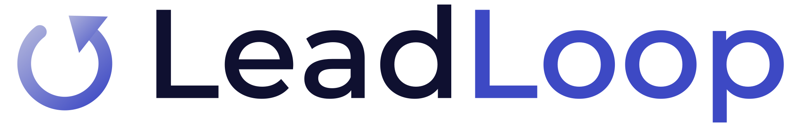
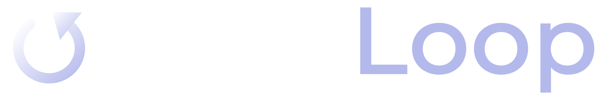
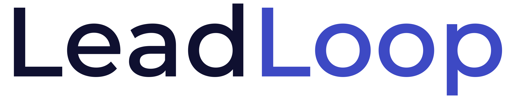
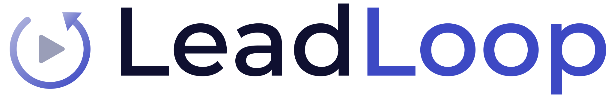
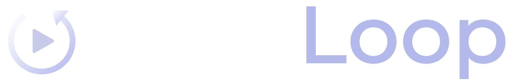

Same MontserratAlt1 geometric wordmark. Pick the mark that fits.
Wordmark plus a circular looping-arrow icon — the visual metaphor for the never-ending follow-up loop. The arrow’s silver→blue gradient ties it to the AI Biz Connect chrome/blue palette. leadloop-logo-a-loopmark.svg


The cleanest option: two-tone “LeadLoop” — “Lead” in ink, “Loop” in brand blue — no icon. Maximum flexibility, reads at any size, works as a text logo in the nav. leadloop-logo-b-wordmark.svg


Wordmark plus the ABC play-triangle nested in a loop ring — signals “an AI Biz Connect product” without a second wordmark. Use where the AIBizConnect endorsement matters (footers, decks). leadloop-logo-c-endorsed.svg


All marks are outlined paths from MontserratAlt1 SemiBold — no font dependency, crisp at any scale. Blue #3D49C4 · Ink #0F1030 · Silver #AEB2DC.